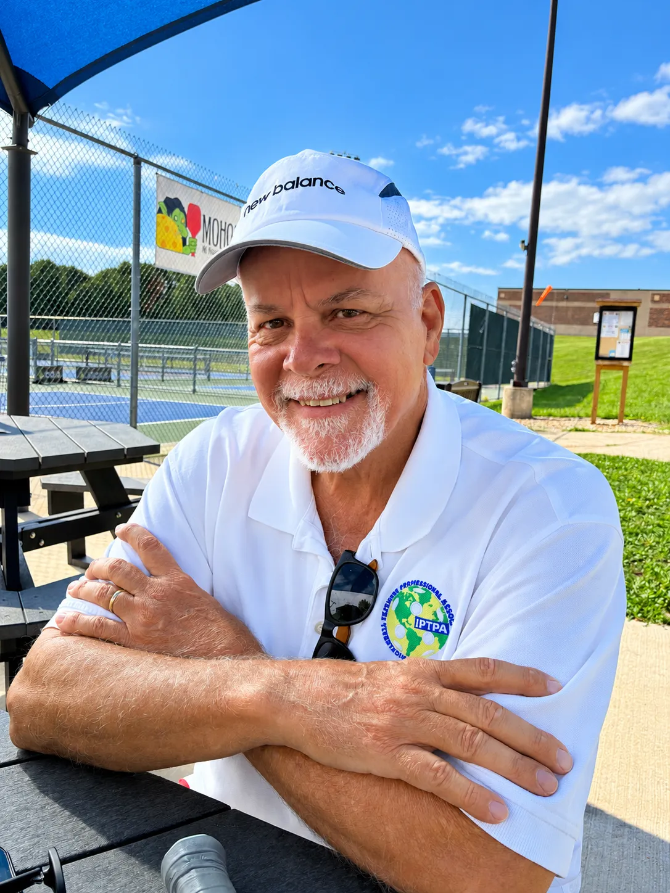
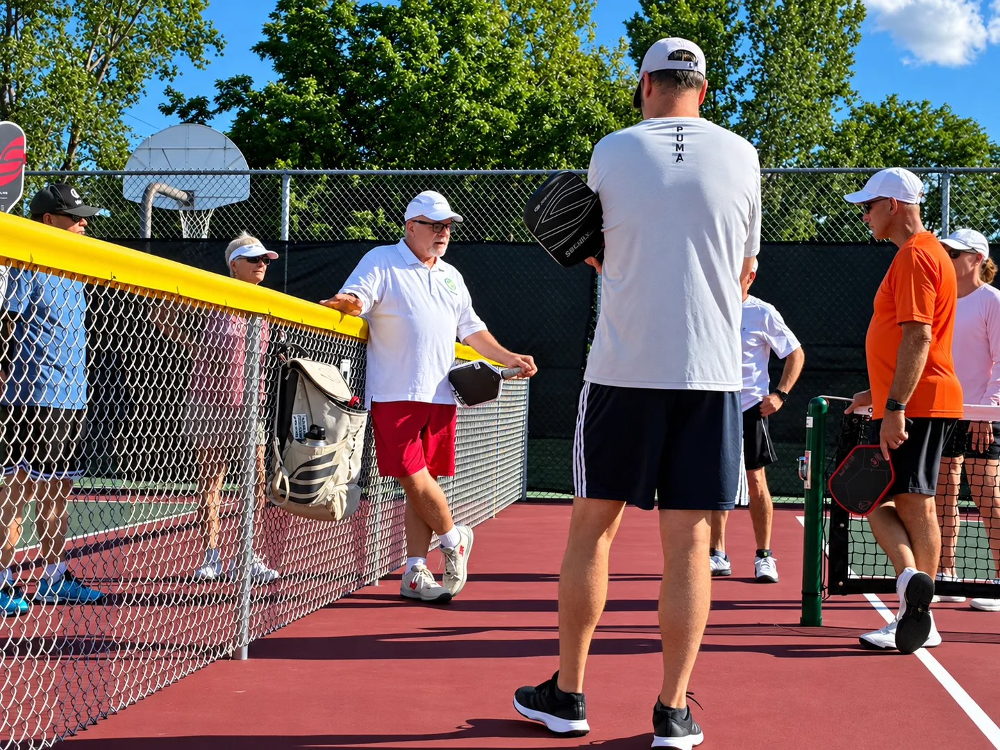
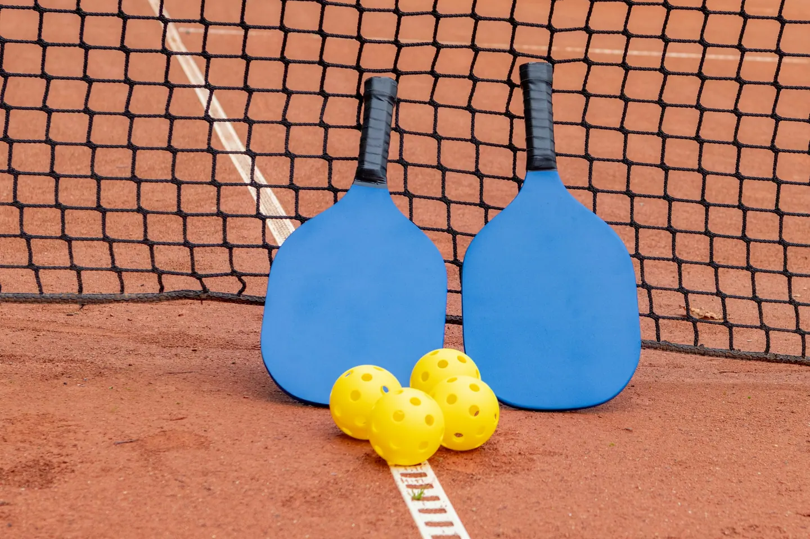
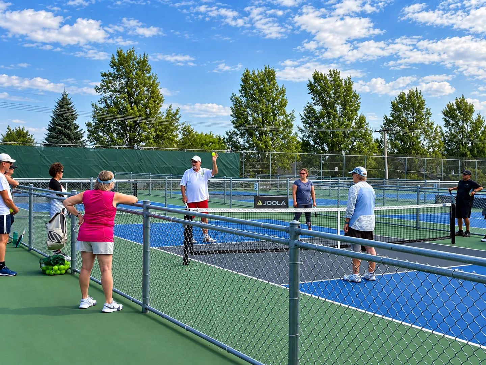
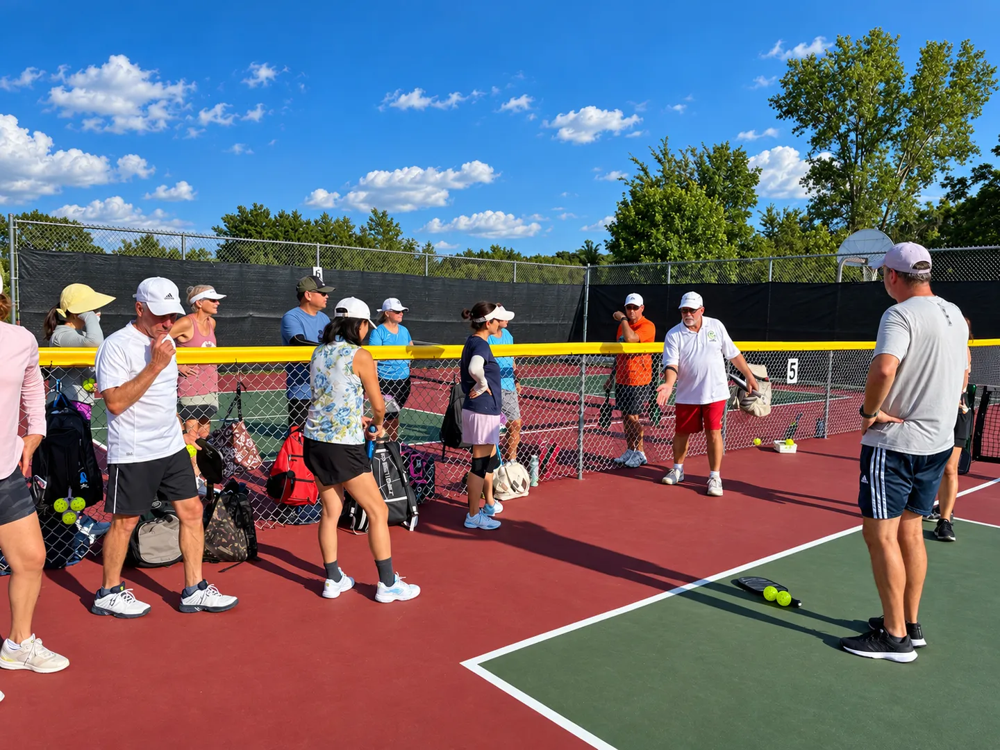

01 · The YMCA
It began at a YMCA in Madison, Wisconsin.
That's where David first discovered pickleball — on a community court, alongside people picking up the game.
Pickleball coaching Alabama
Pickleball coaching with David Mott, built on more than a decade of involvement in the sport and years of coaching experience.

Meet David
David first discovered pickleball at a YMCA in Madison, Wisconsin, where he began helping players on the court. That early involvement grew into coaching.
Over time his experience expanded through years of playing, teaching and working with other players — first in Wisconsin, and now in Alabama, where he's based today.
David is retired from higher education and coaches part-time. That keeps things personal: you're talking to David himself, about your game and what you'd like to improve.

David Mott
Pickleball coach · retired from higher education
Wisconsin → Alabama
No academy and no grand plan — a YMCA court in Madison, a few players who wanted a hand, and years of coaching that grew from there.



01 · The YMCA
That's where David first discovered pickleball — on a community court, alongside people picking up the game.
02 · Helping
A tip here, a demonstration there. Helping other players came naturally — and it kept going.
03 · Coaching
Over time, David's involvement developed into coaching in Wisconsin — years of playing, teaching and working with other players.
04 · Higher education
David is retired from higher education. Pickleball and coaching are the part he's kept going.
05 · Alabama
David now lives in Alabama and brings more than a decade of involvement in the sport with him.
06 · Today
Not a commercial academy — David coaching part-time, with time for each player's questions.
What would you like help with?Experience
More than a decade around the game, years of coaching, and a background in higher education — offered part-time, one conversation at a time.
In pickleball
Approximately 12 to 15 years of involvement in pickleball.
Coaching
Years of coaching experience, from Wisconsin to Alabama.
Background
Retired from higher education.
Coaching today
Part-time coaching.
Started A YMCA in Madison, WisconsinBased AlabamaNext step Ask about lessons
Coaching interest
Inquiry first — options confirmed with David
David coaches part-time, so the details are worked out with him directly. Pick what you're interested in and he'll let you know what's currently available.
Private lesson interest
Interested in more individualized pickleball instruction? Ask David about available lesson options.
Ask about private lessonsAn interest category — what's available is confirmed directly with David.
Group / clinic interest
Interested in learning alongside other players? Ask David whether group or clinic opportunities are currently available.
Ask about group optionsAn interest category — whether groups or clinics are running is confirmed with David.
Skill development
Looking to improve specific parts of your game? Share what you would like help with.
Share what you'd like help withAn interest category — David replies about what he can help with.
Not sure
Tell David about your experience and what you're hoping to improve.
Ask about coachingNo need to know what you want yet — a short note is enough.
On court
Based in AlabamaExact courts and lesson locations are discussed directly with David
A few moments from David's time on court — explaining, demonstrating and talking the game through with players.
What players say about learning with David.
Shared with permission.Contact
Interested in working with David? Send a short message about your experience and what you're hoping to improve.
Inquiry first. Lesson options, scheduling, location and pricing are confirmed directly with David — nothing on this page is a booking.